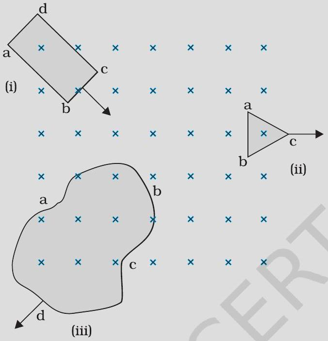
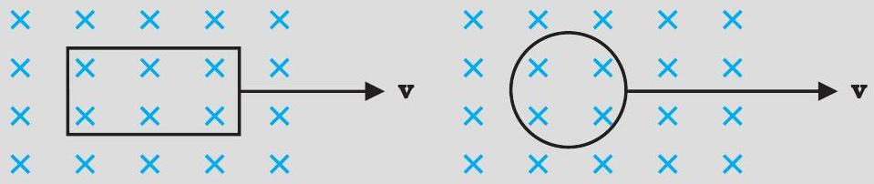
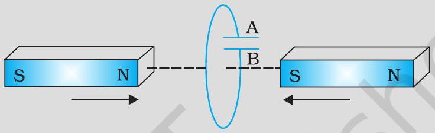
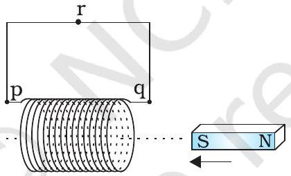
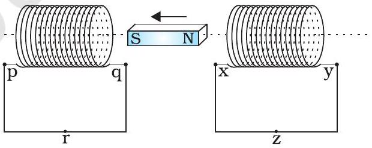
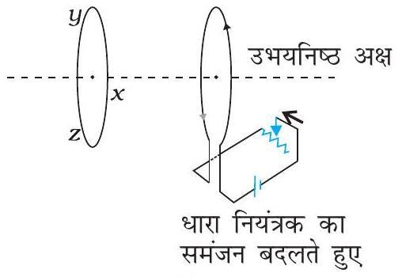
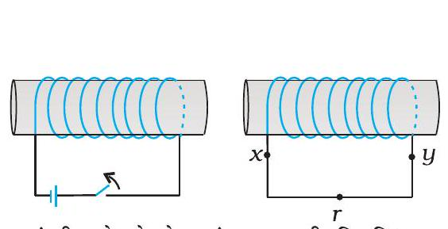
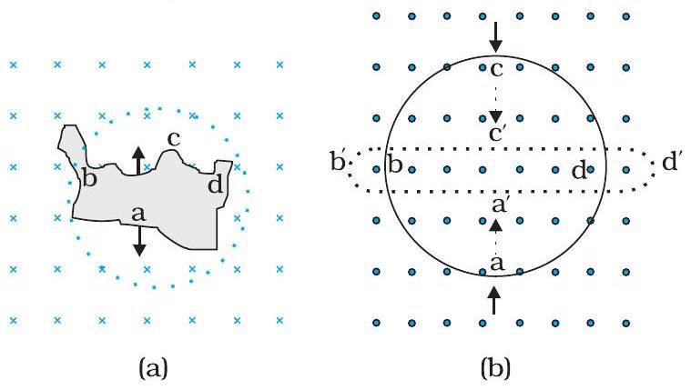
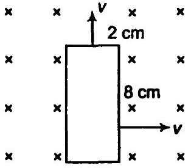
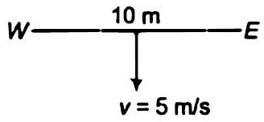

प्रयोग 6.2 पर विचार करें। (a) धारामापी में अधिक विक्षेप प्राप्त करने के लिए आप क्या करेंगे? (b) धारामापी की अनुपस्थिति में आप प्रेरित धारा की उपस्थिति किस प्रकार दर्शाएँगे?
धारामापी में अधिक विक्षेप प्राप्त करने के लिए आप क्या करेंगे?
धारामापी की अनुपस्थिति में आप प्रेरित धारा की उपस्थिति किस प्रकार दर्शाएँगे?
एक वर्गाकार लूप जिसकी एक भुजा 10 cm लंबी है तथा जिसका प्रतिरोध 0.5 Ω है, पूर्व-पश्चिम तल में ऊर्ध्वाधर रखा गया है। 0.10 T के एक एकसमान चुंबकीय क्षेत्र को उत्तर-पूर्व दिशा में तल के आर-पार स्थापित किया गया है। चुंबकीय क्षेत्र को एकसमान दर से 0.70 s में घटाकर शून्य तक लाया जाता है। इस समय अंतराल में प्रेरित विद्युत वाहक बल तथा धारा का मान ज्ञात कीजिए।
10 cm त्रिज्या, 500 फेरों तथा 2 Ω प्रतिरोध की एक वृत्ताकार कुंडली को इसके तल के लंबवत पृथ्वी के चुंबकीय क्षेत्र के क्षैतिज घटक में रखा गया है। इसे अपने ऊर्ध्व व्यास के परितः 0.25 s में 180° से घुमाया गया कुंडली में प्रेरित विद्युत वाहक बल तथा विद्युत धारा का आकलन कीजिए। दिए गए स्थान पर पृथ्वी के चुंबकीय क्षेत्र के क्षैतिज घटक का मान 3.0 × 10-5 T है।
चित्र 6.7 में विभिन्न आकार के समतल लूप जो चुंबकीय क्षेत्र में प्रवेश कर रहे हैं अथवा क्षेत्र से बाहर निकल रहे हैं, दिखाए गए हैं। चुंबकीय क्षेत्र लूप के तल के अभिलंबवत किंतु प्रेक्षक से दूर जाते हैं। लेंज के नियम का उपयोग करते हुए प्रत्येक लूप में प्रेरित विद्युत धारा की दिशा ज्ञात कीजिए।



एक बंद लूप, दो स्थिर रखे गए स्थायी चुंबकों के उत्तरी तथा दक्षिणी ध्रुवों के बीच चुंबकीय क्षेत्र में स्थिर रखा गया है। क्या हम अत्यंत प्रबल चुंबकों का उपयोग करके लूप में धारा उत्पन्न होने की आशा कर सकते हैं।
एक बंद लूप विशाल संधारित्र की प्लेटों के बीच स्थिर विद्युत क्षेत्र के अभिलंबवत गति करता है। क्या लूप में प्रेरित धारा उत्पन्न होगी (i) जब लूप संधारित्र की प्लेटों के पूर्णतः अंदर हो (ii) जब लूप आंशिक रूप से प्लेटों के बाहर हो? विद्युत क्षेत्र लूप के तल के अभिलंबवत है।
एक आयताकार लूप एवं एक वृत्ताकार लूप एकसमान चुंबकीय क्षेत्र में से (चित्र 6.8) क्षेत्र विहीन भाग में एकसमान वेग v से निकल रहे हैं। चुंबकीय क्षेत्र से बाहर निकलते समय, आप किस लूप में प्रेरित विद्युत वाहक बल के स्थिर होने की अपेक्षा करते हैं? क्षेत्र, लूपों के तल के अभिलंबवत है।
चित्र 6.9 में वर्णित स्थिति के लिए संधारित्र की ध्रुवता की प्रागुक्ति (Predict) कीजिए।
एक मीटर लंबी धातु की एक छड़ को 50 चक्कर/सेंकड की आवृत्ति से घुमाया गया है। छड़ का एक सिरा वृत्ताकार धात्विक वलय जिसकी त्रिज्या 1 मीटर है, के केन्द्र पर तथा दूसरा सिरा वलय की परिधि पर कब्ज़े से इस प्रकार जुड़ा है कि छड़ की गति वलय के केन्द्र से जाने वाले तथा वलय के तल में अभिलंबवत अक्ष के परितः है (चित्र 6.11)। अक्ष के अनुदिश एक स्थिर तथा एकसमान चुंबकीय क्षेत्र 1 T सर्वत्र उपस्थित है। केन्द्र तथा धात्विक वलय के बीच विद्युत वाहक बल क्या होगा?
एक पहिया जिसमें 0.5 m लंबे 10 धात्विक स्पोक (spokes) हैं, को 120 चक्र प्रति मिनट की दर से घुमाया जाता है। पहिये का घूर्णन तल उस स्थान पर पृथ्वी के चुंबकीय क्षेत्र के क्षैतिज घटक HE के अभिलंबवत है। उस स्थान पर यदि HE = 0.4 G है तो पहिये की धुरी (axle) तथा रिम के मध्य स्थापित प्रेरित विद्युत वाहक बल का मान क्या होगा? नोट कीजिए 1 G = 10-4 T
दो संकेन्द्री वृत्ताकार कुंडलियाँ, एक कम त्रिज्या r1 की तथा दूसरी अधिक त्रिज्या r2 की, ऐसी कि r1 ≪ r2, समाक्षी रखी हैं तथा दोनों के केन्द्र संपाती हैं। इस व्यवस्था के लिए अन्योन्य प्रेरकत्व ज्ञात कीजिए।
परिनालिका में संचित चुंबकीय ऊर्जा का व्यंजक परिनालिका के चुंबकीय क्षेत्र B, क्षेत्रफल A तथा लंबाई l के पदों में ज्ञात कीजिए।
यह चुंबकीय ऊर्जा तथा संधारित्र में संचित स्थिरवैद्युत ऊर्जा किस रूप में तुलनीय है?
कमला एक स्थिर साइकिल के पैडल को घुमाती है। पैडल का संबंध 100 फेरों तथा 0.10 m2 क्षेत्रफल वाली एक कुंडली से है। कुंडली प्रति सेकंड आधा परिक्रमण (चक्कर) कर पाती है तथा यह एक 0.01 T तीव्रता वाले एकसमान चुंबकीय क्षेत्र में, जो कुंडली के घूर्णन अक्ष के लंबवत है, रखी है। कुंडली में उत्पन्न होने वाली अधिकतम वोल्टता क्या होगी?
चित्र 6.15 (a) से (f) में वर्णित स्थितियों के लिए प्रेरित धारा की दिशा की प्रागुक्ति (predict) कीजिए।




चित्र 6.16 में वर्णित स्थितियों के लिए लेंज के नियम का उपयोग करते हुए प्रेरित विद्युत धारा की दिशा ज्ञात कीजिए। (a) जब अनियमित आकार का तार वृत्ताकार लूप में बदल रहा हो; (b) जब एक वृत्ताकार लूप एक सीधे बारीक तार में विरूपित किया जा रहा हो।

एक लंबी परिनालिका के इकाई सेंटीमीटर लंबाई में 15 फेरे हैं। उसके अंदर 2.0 cm2 का एक छोटा-सा लूप परिनालिका की अक्ष के लंबवत रखा गया है। यदि परिनालिका में बहने वाली धारा का मान 2.0 A में 4.0 A से 0.1 s कर दिया जाए तो धारा परिवर्तन के समय प्रेरित विद्युत वाहक बल कितना होगा?
एक आयताकार लूप जिसकी भुजाएँ 8 cm एवं 2 cm हैं, एक स्थान पर थोड़ा कटा हुआ है। यह लूप अपने तल के अभिलंबवत 0.3 T के एकसमान चुंबकीय क्षेत्र से बाहर की ओर निकल रहा है। यदि लूप के बाहर निकलने का वेग 1 cm s-1 है तो कटे भाग के सिरों पर उत्पन्न विद्युत वाहक बल कितना होगा, जब लूप की गति अभिलंबवत हो (a) लूप की लंबी भुजा के (b) लूप की छोटी भुजा के। प्रत्येक स्थिति में उत्पन्न प्रेरित वोल्टता कितने समय तक टिकेगी?

1.0 m लंबी धातु की छड़ उसके एक सिरे से जाने वाले अभिलंबवत अक्ष के परितः 400 rad s-1 की कोणीय आवृत्ति से घूर्णन कर रही है। छड़ का दूसरा सिरा एक धात्विक वलय से संपर्कित है। अक्ष के अनुदिश सभी जगह 0.5 T का एकसमान चुंबकीय क्षेत्र उपस्थित है। वलय तथा अक्ष के बीच स्थापित विद्युत वाहक बल की गणना कीजिए।
पूर्व से पश्चिम दिशा में विस्तृत एक 10 m लंबा क्षैतिज सीधा तार 0.30 × 10-4 Wb m-2 तीव्रता वाले पृथ्वी के चुंबकीय क्षेत्र के क्षैतिज घटक से लंबवत 5.0 m s-1 की चाल से गिर रहा है। (a) तार में प्रेरित विद्युत वाहक बल का तात्क्षणिक मान क्या होगा? (b) विद्युत वाहक बल की दिशा क्या है? (c) तार का कौन-सा सिरा उच्च विद्युत विभव पर है?

तार में प्रेरित विद्युत वाहक बल का तात्क्षणिक मान क्या होगा?
विद्युत वाहक बल की दिशा क्या है?
तार का कौन-सा सिरा उच्च विद्युत विभव पर है?
किसी परिपथ में 0.1 s में धारा 5.0 A से 0.0 A तक गिरती है। यदि औसत प्रेरित विद्युत वाहक बल 200 V है तो परिपथ में स्वप्रेरकत्व का आकलन कीजिए।
पास-पास रखे कुंडलियों के एक युग्म का अन्योन्य प्रेरकत्व 1.5 H है। यदि एक कुंडली में 0.5 s में धारा 0 से 20 A परिवर्तित हो, तो दूसरी कुंडली की फ्लक्स बंधता में कितना परिवर्तन होगा?